Amor incondicional
Nuestras mascotas te darán todo su cariño y lealtad.
Compañeros para siempre
Encuentra a tu compañero peludo y crea recuerdos duraderos.
Beneficios de adoptar.
Amor incondicional y compañía.
Ayudas a salvar una vida.
Llenas tu hogar de alegría y diversión.


 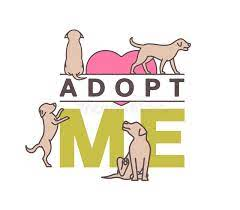
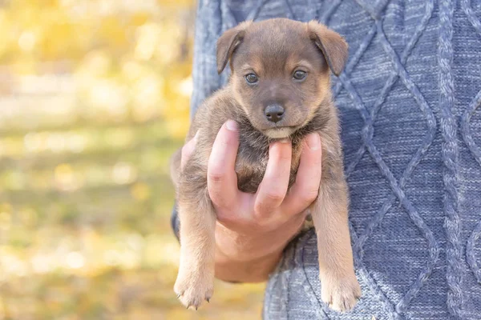
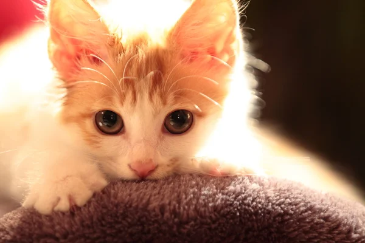
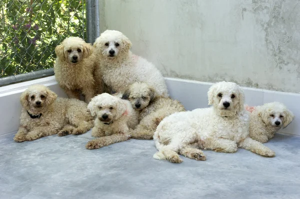
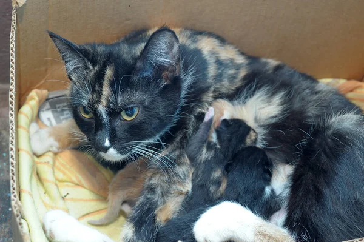
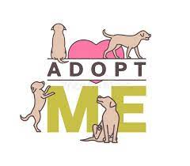
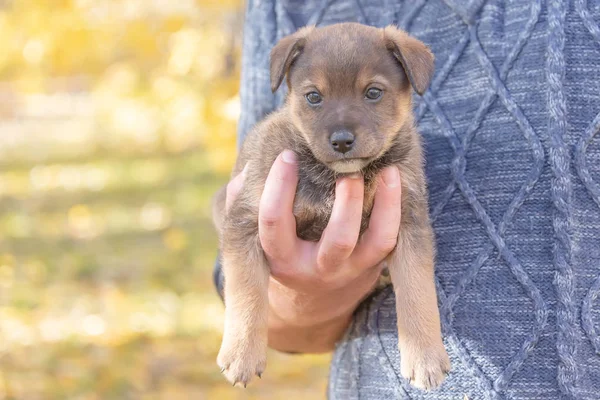
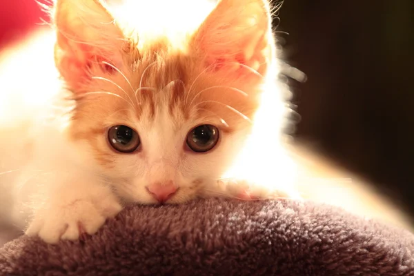
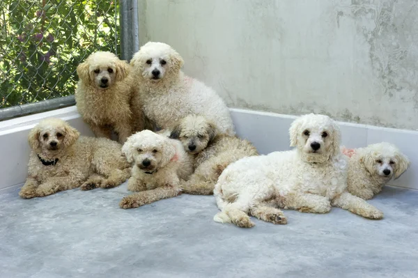
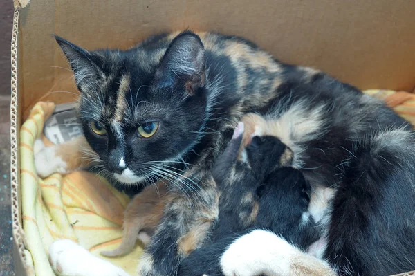
 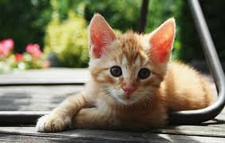
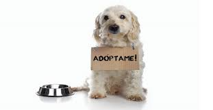
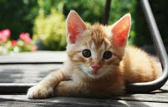
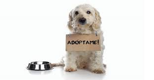
Ayuda a un animal necesitado
Adoptar es una forma de brindar amor y cuidado a un animal en busca de un hogar.
Proceso de Adopción
1. Mira las mascotas disponibles y encuentra la que te roba el corazón.
2. Completa una solicitud de adopción en línea.
3. Programa una reunión para conocer a la mascota en persona.
4. Si la reunión es exitosa, completa los trámites de adopción y lleva a tu mascota a casa.
Recuerda que hacemos visitas cada cierto tiempo para ver a tu mascota.